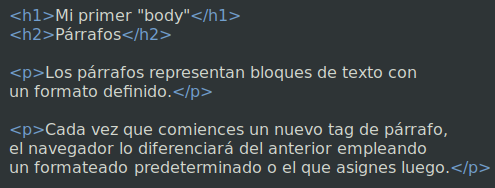
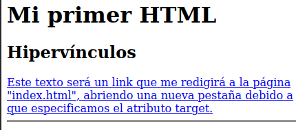

4. Tu primer "body" en HTML
El "body" es la parte visible de nuestra página web.
<!DOCTYPE html>
<html lang="es">
<head>
</head>
<body>
</body>
</html>
Ésta, casi siempre, será la parte más extensa de nuestro documento html.
Dentro de sus tags escribirás todos los tags que organizarán
y estructurarán el contenido de la página.
En esta sesión estudiaremos sus elementos mas frencuentes.
1. Encabezados
Los encabezados definen el título y subtítulos de la información de tu página.
Para crear un "heading" escribimos texto entre cualquiera de los
siguientes tags
<h1></h1>
<h2></h2>
<h3></h3>
<h4></h4>
<h5></h5>
<h6></h6>
El número de los "headings" indica su nivel de importancia y son empleados
no solo por los usuarios sino también por los motores de búsqueda.
Los buscadores indexan las páginas empleando la estructura
que proveen los headings.
Un "h1" indica que el texto contenido es un
encabezado principal mientras que un "h2" señala que es un encabezado de
menor importancia que el anterior y así consecuentemente.
Los "headings" modifican el grosor del texto y su tamaño para comunicar
su importancia. Un "h4" será mucho más pequeño que un "h1".
Pero debes cuidar de no usar los "headings" sólo para formatear tu texto,
sino principalmente
para definir la estructura del documento o sección que presentas.
Emplear los encabezados solo para formatear tu contenido generará
una estructura confusa a nivel de código en tu página web.
A continuación te mostraré el código de un par de headings y luego su
presentación en el navegador web.

Puedes modificar prácticamente todos los aspectos de estilo de los
encabezados en HTML5. Separación entre letras, entre palabras, interlineados,
tamaño de fuente, peso, sombreado de texto, bordeado, y otros
más con CSS, o con formateado local en HTML5. Hablaremos sobre
esto en la quinta sesión.
2. Párrafos
Los párrafos representan bloques de texto con un formato
definido. Creamos párrafos escribiendo texto entre los
siguientes tags
<p></p>
Cada vez que comiences un nuevo tag de párrafo, el navegador lo diferenciará
del anterior empleando un formateado predeterminado o el que asignes luego.
A continuación te mostraré el código de algunos párrafos y luego su
representación en el navegador web.


Como puedes notar en el ejemplo anterior, el formateado predeterminado
de los párrafos, genera un espacio entre vertical entre el primer y el segundo
párrafo.
Puedes modificar por completo el formateado de párrafos utilizando
CSS o con atributos de estilizado local en los párrafos.
3. Listas
Las listas organizan elementos relacionados dentro de una
pila (serie de elementos seriados en sentido vertical)
que puede estar indexada visiblemente.
Hay tres tipos de listas en html:
- Listas ordenadas.
- Listas no ordenadas.
- Listas de descripción.
La lista que acabas de leer fue escrita dentro del código
de html para listas ordenadas.
Las listas ordenadas son aquellas indexadas con números naturales,
o letras, o números romanos. Las listas no ordenadas son aquellas
indezadas con círculos, discos, asteriscos u otro símbolo.
Las listas de descripción automáticamente colocan el
término a definir hacia la izquiera del espacio disponible, y en la próxima línea
ubican su definición luego de un sangrado de línea (el sangrado de línea
es un espacio predeterminado antes del texto
que indica el comienzo de una línea diferente o de un nuevo párrafo).
Éste tipo de lista en HTML5 carece de símbolos precedentes al
término por definir y a su definición.
A continuación te mostraré el código de las listas y luego su representación en el
navegador.
<ol>
<li> Ésta es una lista con indexado visible </li>
</ol>
<ul>
<li> Ésta es una lista sin indexado visible </li>
</ul>
<dl>
<dt> Ésta es una lista de descripción </dt>
<dd> Aquí escribes la definición del término </dd>
</dl>

Puedes formatear cada aspecto de las listas con CSS o con formateado
local dentro del documento de html.
4. Comentarios
Los comentarios permiten te escribir texto dentro del documento
sin que éste se muestre en el navegador. Creamos comentarios en HTML5
escribiento dentro de éstos símbolos.
<!-- -->
Los comentarios te permiten escribir recordatorios de aspectos importantes
del documento o aclaratorias para otros desarrolladores
que trabajen con tu documento.
A continuación te mostraré el código de un comentario y la manera en la que
éste oculta el texto que contiene.

Los comentarios también te pueden ayudar a depurar tu código. Puedes identificar
errores imperceptibles a primera vista, encerrando secciones de tu documento
dentro de un comentario para ubicar las partes de tu código que contienen
fallas.
5. Links
Empleamos "links" para desplazarnos entre las páginas de
un sitio web, para enviar correos, e incluso desplazarnos entre las secciones de una
página.
El código para escribir un link es éste:
<a href=" ... "></a>
Puedes encerrar tanto texto como otros tags dentro del
tag de "link". Esto te permite
utilizar texto, imágenes, formas e incluso botones como "links".
De igual manera puedes escribir solo texto dentro del tag de "link".
Esto hará que se muestre el texto en el formato predeterminado para
los hipervínculos, o en el formato que definas luego.
Creamos un link escibiendo su tag y asigando la dirección a la que
nos dirigiremos dentro del atributo "href" de esta manera:
<a href="dwlatino.github.io/html/#curso_html"></a>
Nota que la dirección fue escrita luego del asignador "=" y entre comillas.
Otro atributo esencial del link es "target". Al hacer click sobre un
link, éste se mostrará en la ventana actual de forma predeterminada. El atributo
"target" nos permite cuatro alternativas para controlar la forma en la que
se mostrará el contenido de la dirección a la que nos refiere el link.
- _self
- Muestra el contenido en la ventana actual del navegador. Esta es
la opción predeterminada.
- _blank
- Muestra el contenido en otra pestaña dentro del navegador activo.
- _parent
- Muestra el contenido en la ventana activa del navegador.
- _top
- Ubica el inicio del documento referido en el tope de la página.
A continuación te mostraré el código para crear algunos links
y luego la manera en la que muestran en el navegador.

Estudiaremos un poco más de los links en el próximo curso (Avanzando en
HTML), cuando
consideremos las sendas de archivos en HTML5.
6. Quiebres de línea
Los quiebres de línea te permiten separar ideas dentro de un
mismo tag en html.
El código para escribir un quiebre de línea es éste:
<br>
Puedes colocar este tag en cualquier parte de un párrafo, o
de una lista, o sección, y desplazará todo lo que esté a
su derecha o abajo, hacia una nueva línea.
A continuación te mostraré un uso de éste tag y
luego su visualización en el navegador.
Puedes formatear los quiebres de líneas con CSS o
con estilizado local en HTML5. Puedes cambiar su color de fondo, altura,
crear bordes a su alrededor, asignarle sombras, etc.
7. Reglas horizontales
Las reglas horizontales indican un cambio de sección en una
página.
El tag de una regla horizontal es éste:
<hr>
A continuación te mostraré el código de una regla horizontal
que separa dos secciones de contenido diferente y en la siguiente
imagen te mostraré su visualización en el navegador.
Puedes formatear las reglas horizontales con CSS o con
estilizado local en HTML. Ésto te permite modiciar su grosor, anchura,
color, inclinación e incluso la redondez de sus extremos.
8. Multimedia
Podemos insertar imágenes, audios, videos y secciones
de otras páginas web dentro de nuestra página.
Los tags para insertar multimedia son estos:
<img>
<audio></audio>
<video></video>
<iframe></iframe>
Por ahora nos enfocaremos en las imágenes dentro de
HTML. Aprenderemos más sobre los demás medio audiovisuales en
nuestro próximo curso "avanzando en html".
El tag de imágenes es "vacío", es decir, es un tag autocontenido
en html.
Insertamos imágenes especificando el URL de la imagen dentro del
atributo "src" que colocamos dentro del tag "img".
El tag para insertar imágenes también soporta el atributo "alt", que
es una descripción del contenido de la imagen que se mostrará en
caso de que la imagen no se cargue correctamente.
A continuación te mostraré el código para insertar una imagen y luego
su visualización en el navegador.
Puedes modificar la proporción de aspecto, la cobertura, el tamaño en
bits, y otras propiedades de la imagen a traves de CSS o de formateado
local en HTML5.
Definir el tamaño de tu imagen será importante para controlar su
visualización detro de tu página web.
Concluyendo
Hasta ahora hemos visto los elementos más básicos y frecuentes
dentro de un "body" de html.
Con estos elementos puedes plasmar el contenido básico de tu
página web.
Pero de seguro habrás notado que nuestra web no luce muy atractiva en
este punto.
No te preocupes por esto,
en la próxima sesión realizarás tu primer formateado de éstos elementos
utilizando tanto CSS como estilizado local en HTML5.